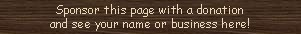

|
Piano English |  |
Many theatre organs include an actual upright or grand piano, with electric or pneumatic mechanisms for playing its keys, so that the piano can be played from the organ console. It was often available at 16', 8' and 4' pitches. Most mechanisms lacked any means of varying the attack, and expression could only be provided by enclosing the piano in a swell box. However, Skinner used an expression pedal to provide five degrees of strength of touch by varying the wind pressure used to actuate the mechanism.
Many organs contain combination mechanisms labelled Piano, Forte, etc.|
Original site compiled by Edward L. Stauff. For educational use only. Piano.html - Last updated 21 October 2001. |
Home Full Index |